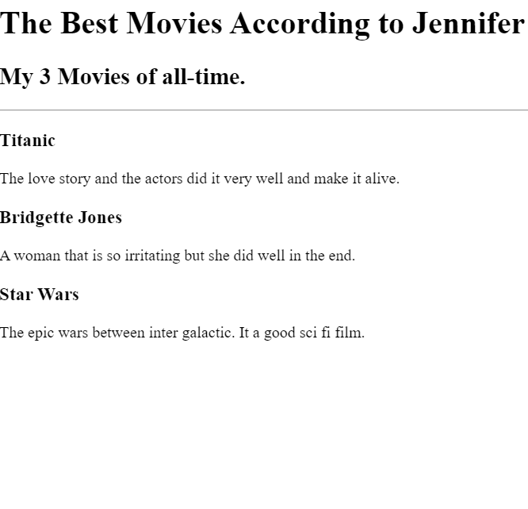

<!-- TODO 1: Create the HTML Boilerplate -->
<!DOCTYPE html>
<html lang="en">

    
    <hr />
    <h1>My Portfolio</h1>
    <hr>
    <meta charset="UTF-8">
    <meta name="viewport" content="width=device-width, initial-scale=1.0">

    <H2>I am a self learning web developer through Udemy online course.</H2>
    

</html>
<!-- TODO 2: Add Your previous projects' HTML into the public folder -->
<h2>My Project During Learning</h2>
<ol>
    <li><a href="./public/Movie Ranking.html">Movie Ranking</a></li>
        <h3>This was my movie ranking according to me. Its so exciting being able to do that using html.</h3>
           <ul></ul>
    <li><a href="./public/Birthday Invite.html">Birthday Invite</a></li>
        <h3>Try out some birthday invite and added some mapping using google maps, and its clicable,to ease viewers to find the location.</h3>
               <ul></ul>
    <li><a href="./public/My Sample Website.html">My Sample Simple Website</a></li>
         <h3>This is my sample website. I attached my picture with my wife. Soon i will able to made our own websites. For businessess and personal use.</h3>    
           <ul></ul>
</ol>

<h4><a href="./public/contact.html">Contact</a> me for more information.</h4>

<!-- TODO 3: Take screenshots of your project previews and add the images to the images folder -->

<!-- TODO 4: Add titles/subtitles etc. -->

<!-- TODO 5: Add a link to the project pages -->

<!-- TODO 6: Add images to show the project previews
HINT for TODO 6: You can use the height attribute set to 200 to make the image smaller:
https://developer.mozilla.org/en-US/docs/Web/HTML/Element/img#attr-height -->

<!-- TODO 7: Add the Contact Me and About Me page links -->